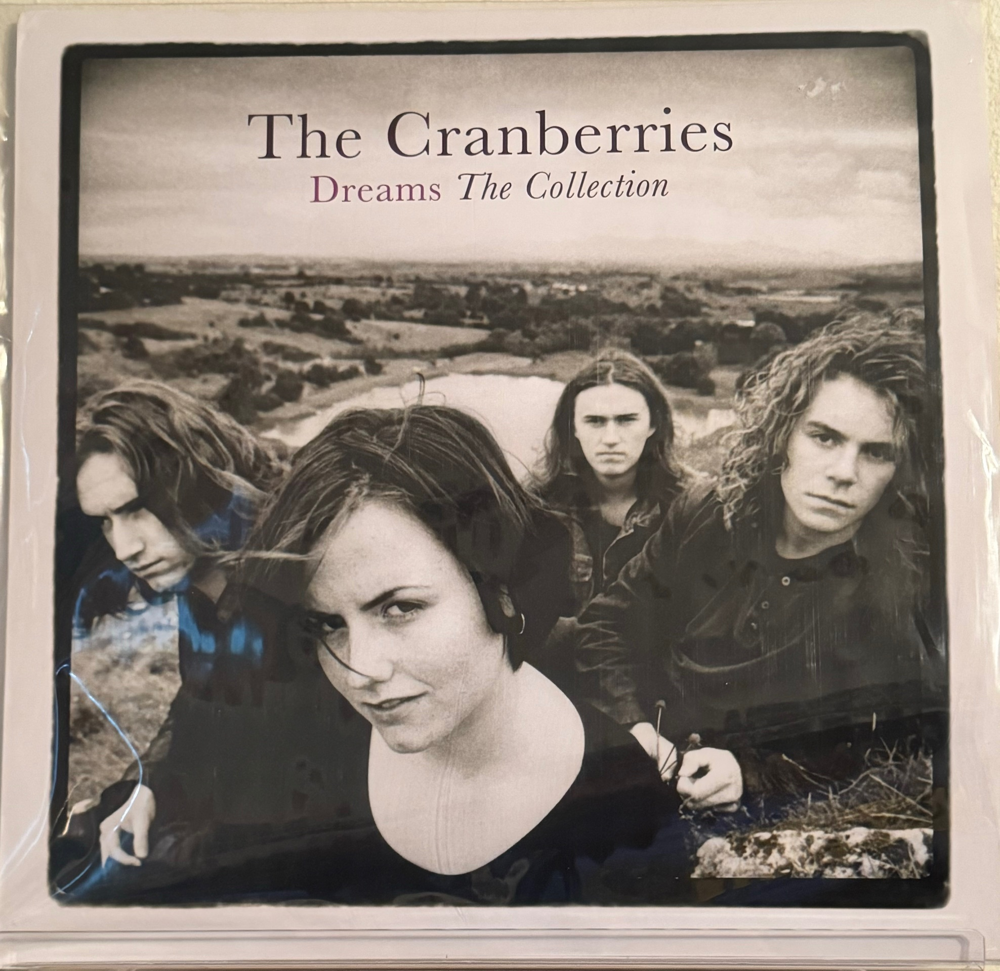
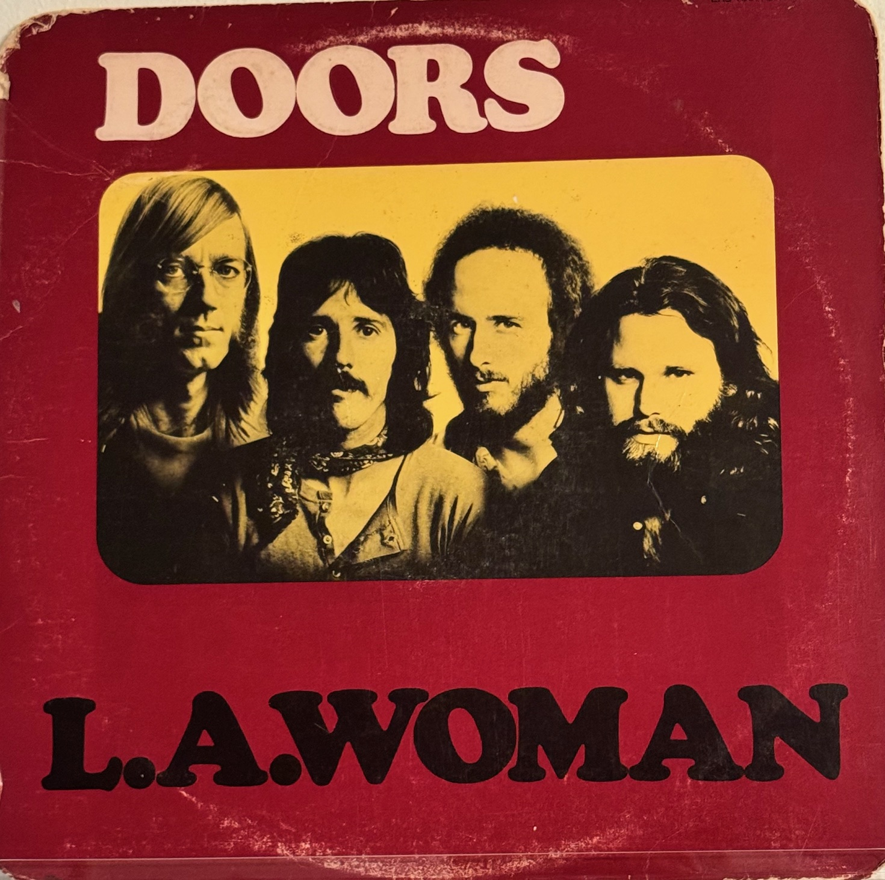
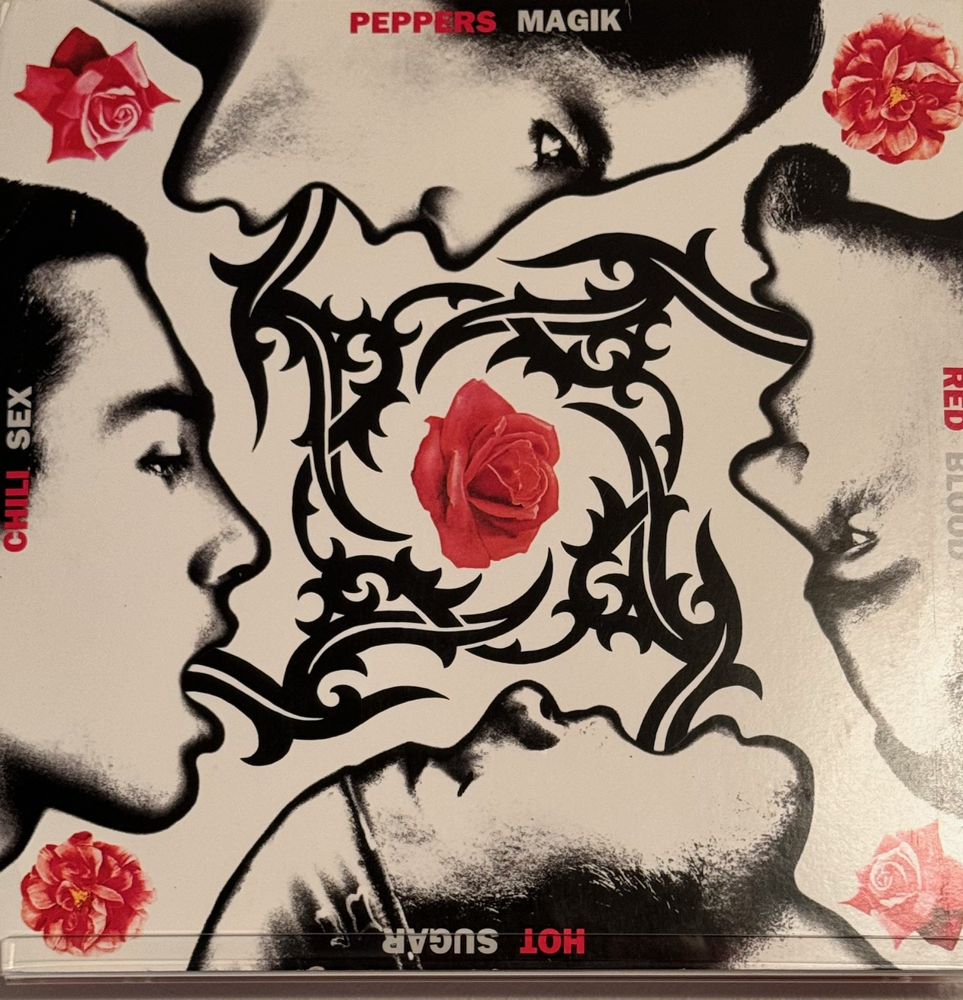

What Makes a Bass Line Important
A bass line is the foundation of a son, connecting the rhythm of the drums with the melody and other instruments. Bass can sometimes get overlooked because it isn't alwasy the loudest instrment, but take it away and you immediately notice something is missing. It provides the root, rhythm, and groove that help hold the entire song together. A great bass line can be simple and repetative or funky and complicated, but its job is always important. Some bass lines even become one of the most recognizable parts of a song. As a bass player, I've learned that you don't always have to play the most notes to make an impact - you just have to play the right ones.

Zombie
"Zombie"by The Cranberries is one of my favorite songs to play on bass because of the way the entire song builds. The bass line, played by Mike Hogan, works closely with Fergal's drums to create a heavy, steady foundation while the guitars move between quieter sections and huge distorted choruses. Dolores O'Riordan originally wrote it on acoustic guitar, even though it became one of The Cranberries heaviest songs.The steady bass and drum, distorted guitars is a big part of what gives the song its power.

L.A. Woman
"L.A. Woman has a bass line that keeps the song moving and gives it that driving, blues-rock feel. As the song builds, the whole band gets more intense. The bass helps hold everything together while still having plenty of personality of its own.I’ve just started playing this one, and while the bass line is pretty repetitive in the beginning, the song eventually slows down and gets funkier and funkier. That change in feel is what makes it so much fun to play.

Suck My Kiss
“Suck My Kiss” has a heavy, funky bass line played by Flea that is right up front in the song. The bass locks in tightly with the drums and guitar, giving the song its aggressive groove and punch. I haven't learned thisone yet, but it's definately a bass line I want to tackle.Flea is an incredible bass player, and his funky, aggressive style is way beyond where I am right now. I like having songs liek this to work toward becasue they give me something new to challenge myself